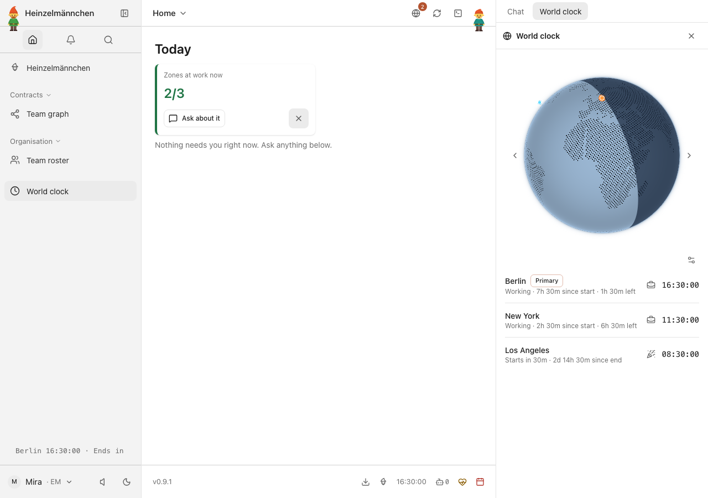
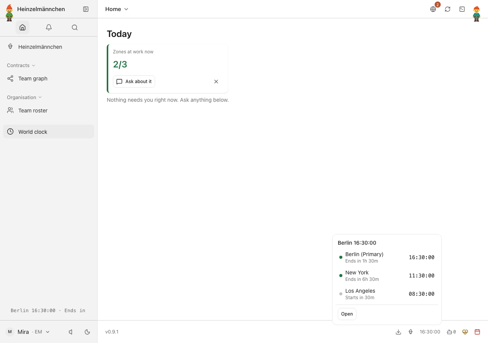
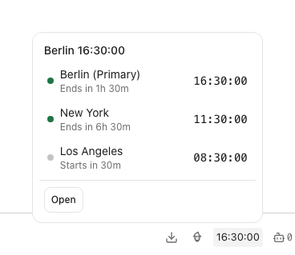
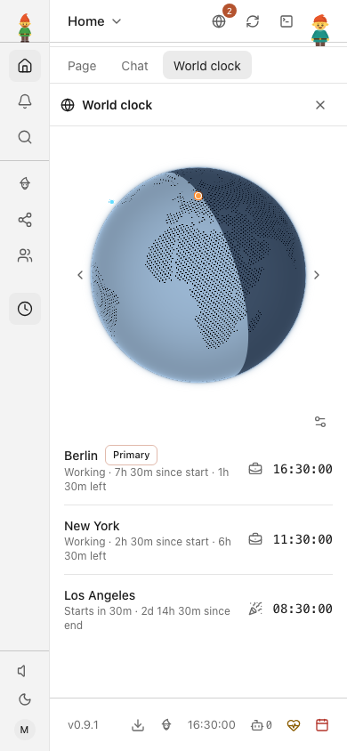
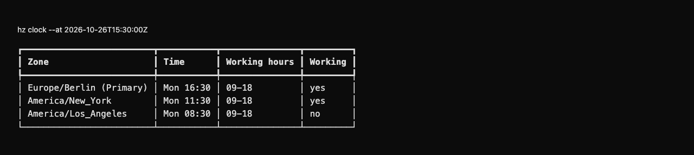
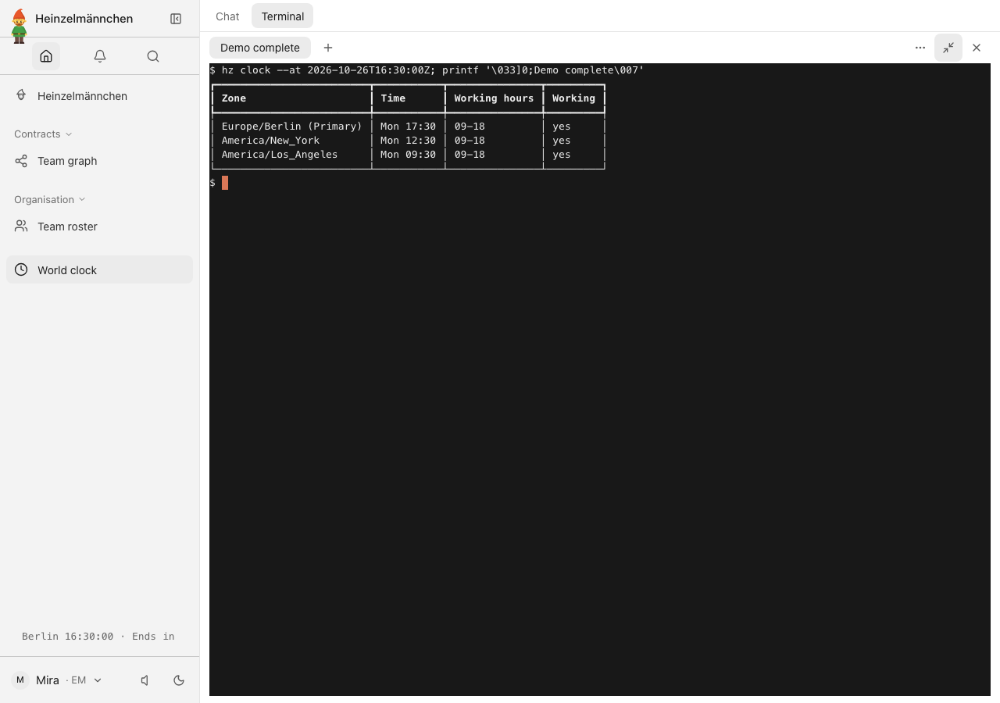

heinzel-clock Isolated demonstration profile · Core 0.9.1 · Review these captures before committing. Click an image to inspect it at full size.

UI · Find overlap across Berlin, New York and Los Angeles while staying on Today — demonstration time 
UI · Team working hours at a glance: Today, sidebar ticker and primary footer clock — demonstration time 
UI · Inspect every configured time zone from the primary footer clock — demonstration time 
UI · The live globe and all three team clocks on a phone — fixed demonstration time 
CLI · The same team zones and working hours in the CLI — fixed fictional demonstration time UI · Fictional demo team at 15:30 UTC: Berlin and New York are within working hours; Los Angeles starts in 30 minutes. 
UI · Preview 16:30 UTC with --at: all three fictional demo zones are within working hours; the app clock stays at 15:30 UTC.